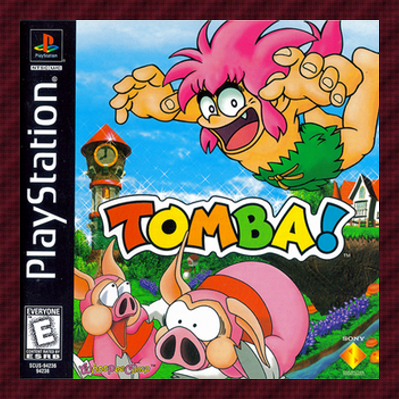
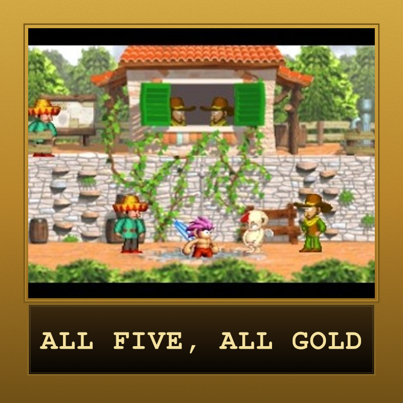
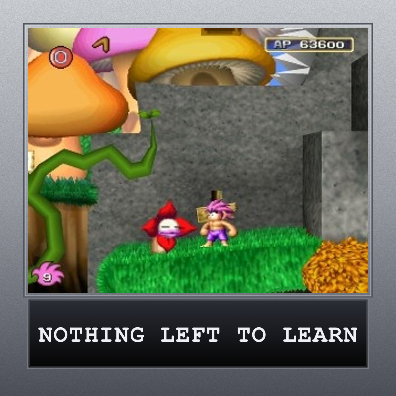
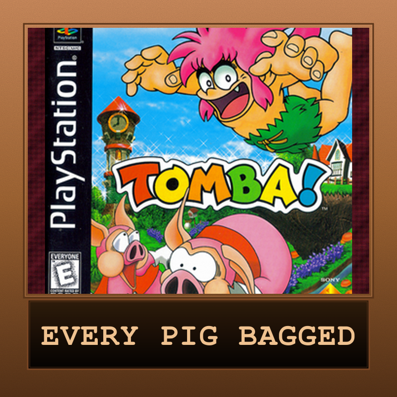

Tomba!
A wild, pink-haired boy grabs, bites, and hurls his way across a cursed island chasing down the Evil Pigs who stole his grandfather's golden bracelet. Whoopee Camp — the studio Ghosts 'n Goblins creator Tokuro Fujiwara founded after leaving Capcom — built 130 non-linear events around that simple grab-and-throw core, letting you tackle its side-scrolling world in almost any order you like. It's equal parts platformer and adventure game — and entirely its own thing.

| Platform | PlayStation |
|---|---|
| Genre | Platform-Adventure |
| Released | (North America) |
| Developer | Whoopee Camp |
| Publisher | Whoopee Camp (JP) / Sony Computer Entertainment (NA/EU) |
| Available | PS1 disc, Tomba! Special Edition (PS5/PS4/Switch/PC), Emulation |
How Long to Beat
Community data via HowLongToBeat (late-2024 snapshot)
Where to Play
About This Game
Developed and published in Japan by Whoopee Camp — the studio Ghosts 'n Goblins creator Tokuro Fujiwara founded in December 1995 after thirteen years at Capcom — Tomba! shipped in Japan on December 25, 1997. Sony Computer Entertainment picked up international publishing, bringing it to North America on July 16, 1998, and to Europe that August 28 under the name Tombi!.
You play Tomba, a feral, pink-haired boy whose grandfather's golden bracelet is stolen by a band of Koma Pigs working for the Evil Pigs. Rather than a straight run to the finish, Fujiwara built a non-linear "event" system around the chase: talking to villagers, solving small tasks, and exploring an open, Metroidvania-style world earns Adventure Points, which unlock further events and treasure chests. Combat is just as tactile — Tomba leaps onto enemies, bites their backs, and throws them — and the whole adventure is built from 130 of these interlocking events.
Did You Know?
- Whoopee Camp was Tokuro Fujiwara's studio — he founded it in December 1995 after thirteen years at Capcom, where he'd created Ghosts 'n Goblins; Tomba! was the studio's very first release.
- A retail flop that became a cult classic — Tomba! didn't sell enough to make Sony's Greatest Hits line, but complete-in-box copies now run around $98 (PriceCharting, early 2026).
- The soundtrack waited 27 years for an official release — Harumi Fujita's score wasn't pressed to disc until Limited Run Games' Tomba! Special Edition Soundtrack in January 2025.
- Tombi! in Europe — the PAL release was renamed, likely because "tomba" is Italian for "grave"; the underlying game, all 130 events of it, is unchanged.
Critical Reception
Tomba! was a critical favorite that never quite became a commercial one — it holds an 84% aggregate on GameRankings, with reviewers singling out its controls, visuals, and freeform event structure. Its audio was the one sticking point, drawing a more mixed reaction.
Club Achievements

All That Glitters
Gold
Level Best
Silver
Bracelet Reclaimed
BronzeOther Participants
No participants yet.
Speedrun Records
Tomba! has an active speedrunning community on speedrun.com, with categories ranging from a quick Any% dash to a full 130-event clear.
Records via speedrun.com/tomba1.
Soundtrack
Composed by Harumi Fujita, Tokuro Fujiwara's longtime collaborator from his Capcom days
Unusually for a 1997 PlayStation game, the score didn't get an official album until nearly three decades later. Limited Run Games pressed the Tomba! Special Edition Soundtrack (LRCD-129, 2-CD) in January 2025 alongside the Special Edition rerelease, with a Japanese counterpart following from Superdeluxe Games that September. Notable tracks include "Village of All Beginnings," "The Expanding World," and "Dwarf Forest." The album can be browsed on VGMdb.
Notable Tracks
- Village of All Beginnings
- The Expanding World
- Dwarf Forest
Track listing and album details via VGMdb (album #141028).
Sources & Attribution
- Game info and plot summary adapted from Wikipedia (Tomba!)
- Speedrun records via speedrun.com/tomba1
- Screenshots via PSXDataCenter
- Trophy mechanics adapted from the Experience and 5 Golden Items pages on the Tomba! wiki (Fandom)
- Soundtrack via VGMdb (album #141028)
- PS1 disc pricing via PriceCharting (Internet Archive snapshot, early 2026)
- Box art via Wikipedia